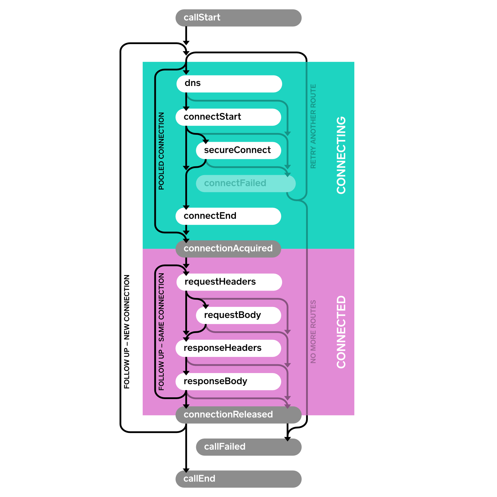

Events¶
Events allow you to capture metrics on your application’s HTTP calls. Use events to monitor:
- The size and frequency of the HTTP calls your application makes. If you’re making too many calls, or your calls are too large, you should know about it!
- The performance of these calls on the underlying network. If the network’s performance isn’t sufficient, you need to either improve the network or use less of it.
EventListener¶
Subclass EventListener and override methods for the events you are interested in. In a successful HTTP call with no redirects or retries the sequence of events is described by this flow.
Here’s a sample event listener that prints each event with a timestamp.
class PrintingEventListener extends EventListener { private long callStartNanos; private void printEvent(String name) { long nowNanos = System.nanoTime(); if (name.equals("callStart")) { callStartNanos = nowNanos; } long elapsedNanos = nowNanos - callStartNanos; System.out.printf("%.3f %s%n", elapsedNanos / 1000000000d, name); } @Override public void callStart(Call call) { printEvent("callStart"); } @Override public void callEnd(Call call) { printEvent("callEnd"); } @Override public void dnsStart(Call call, String domainName) { printEvent("dnsStart"); } @Override public void dnsEnd(Call call, String domainName, List<InetAddress> inetAddressList) { printEvent("dnsEnd"); } ... }
We make a couple calls:
Request request = new Request.Builder() .url("https://publicobject.com/helloworld.txt") .build(); System.out.println("REQUEST 1 (new connection)"); try (Response response = client.newCall(request).execute()) { // Consume and discard the response body. response.body().source().readByteString(); } System.out.println("REQUEST 2 (pooled connection)"); try (Response response = client.newCall(request).execute()) { // Consume and discard the response body. response.body().source().readByteString(); }
And the listener prints the corresponding events:
REQUEST 1 (new connection) 0.000 callStart 0.010 dnsStart 0.017 dnsEnd 0.025 connectStart 0.117 secureConnectStart 0.586 secureConnectEnd 0.586 connectEnd 0.587 connectionAcquired 0.588 requestHeadersStart 0.590 requestHeadersEnd 0.591 responseHeadersStart 0.675 responseHeadersEnd 0.676 responseBodyStart 0.679 responseBodyEnd 0.679 connectionReleased 0.680 callEnd REQUEST 2 (pooled connection) 0.000 callStart 0.001 connectionAcquired 0.001 requestHeadersStart 0.001 requestHeadersEnd 0.002 responseHeadersStart 0.082 responseHeadersEnd 0.082 responseBodyStart 0.082 responseBodyEnd 0.083 connectionReleased 0.083 callEnd
Notice how no connect events are fired for the second call. It reused the connection from the first request for dramatically better performance.
EventListener.Factory¶
In the preceding example we used a field, callStartNanos, to track the elapsed time of each event. This is handy, but it won’t work if multiple calls are executing concurrently. To accommodate this, use a Factory to create a new EventListener instance for each Call. This allows each listener to keep call-specific state.
This sample factory creates a unique ID for each call and uses that ID to differentiate calls in log messages.
class PrintingEventListener extends EventListener { public static final Factory FACTORY = new Factory() { final AtomicLong nextCallId = new AtomicLong(1L); @Override public EventListener create(Call call) { long callId = nextCallId.getAndIncrement(); System.out.printf("%04d %s%n", callId, call.request().url()); return new PrintingEventListener(callId, System.nanoTime()); } }; final long callId; final long callStartNanos; public PrintingEventListener(long callId, long callStartNanos) { this.callId = callId; this.callStartNanos = callStartNanos; } private void printEvent(String name) { long elapsedNanos = System.nanoTime() - callStartNanos; System.out.printf("%04d %.3f %s%n", callId, elapsedNanos / 1000000000d, name); } @Override public void callStart(Call call) { printEvent("callStart"); } @Override public void callEnd(Call call) { printEvent("callEnd"); } ... }
We can use this listener to race a pair of concurrent HTTP requests:
Request washingtonPostRequest = new Request.Builder() .url("https://www.washingtonpost.com/") .build(); client.newCall(washingtonPostRequest).enqueue(new Callback() { ... }); Request newYorkTimesRequest = new Request.Builder() .url("https://www.nytimes.com/") .build(); client.newCall(newYorkTimesRequest).enqueue(new Callback() { ... });
Running this race over home WiFi shows the Times (0002) completes just slightly sooner than the Post (0001):
0001 https://www.washingtonpost.com/ 0001 0.000 callStart 0002 https://www.nytimes.com/ 0002 0.000 callStart 0002 0.010 dnsStart 0001 0.013 dnsStart 0001 0.022 dnsEnd 0002 0.019 dnsEnd 0001 0.028 connectStart 0002 0.025 connectStart 0002 0.072 secureConnectStart 0001 0.075 secureConnectStart 0001 0.386 secureConnectEnd 0002 0.390 secureConnectEnd 0002 0.400 connectEnd 0001 0.403 connectEnd 0002 0.401 connectionAcquired 0001 0.404 connectionAcquired 0001 0.406 requestHeadersStart 0002 0.403 requestHeadersStart 0001 0.414 requestHeadersEnd 0002 0.411 requestHeadersEnd 0002 0.412 responseHeadersStart 0001 0.415 responseHeadersStart 0002 0.474 responseHeadersEnd 0002 0.475 responseBodyStart 0001 0.554 responseHeadersEnd 0001 0.555 responseBodyStart 0002 0.554 responseBodyEnd 0002 0.554 connectionReleased 0002 0.554 callEnd 0001 0.624 responseBodyEnd 0001 0.624 connectionReleased 0001 0.624 callEnd
The EventListener.Factory also makes it possible to limit metrics to a subset of calls. This one captures metrics on a random 10%:
class MetricsEventListener extends EventListener { private static final Factory FACTORY = new Factory() { @Override public EventListener create(Call call) { if (Math.random() < 0.10) { return new MetricsEventListener(call); } else { return EventListener.NONE; } } }; ... }
Events with Failures¶
When an operation fails, a failure method is called. This is connectFailed() for failures while building a connection to the server, and callFailed() when the HTTP call fails permanently. When a failure happens it is possible that a start event won’t have a corresponding end event.
Events with Retries and Follow-Ups¶
OkHttp is resilient and can automatically recover from some connectivity failures. In this case, the connectFailed() event is not terminal and not followed by callFailed(). Event listeners will receive multiple events of the same type when retries are attempted.
A single HTTP call may require follow-up requests to be made to handle authentication challenges, redirects, and HTTP-layer timeouts. In such cases multiple connections, requests, and responses may be attempted. Follow-ups are another reason a single call may trigger multiple events of the same type.

Availability¶
Events is available as a public API in OkHttp 3.11. Future releases may introduce new event types; you will need to override the corresponding methods to handle them.